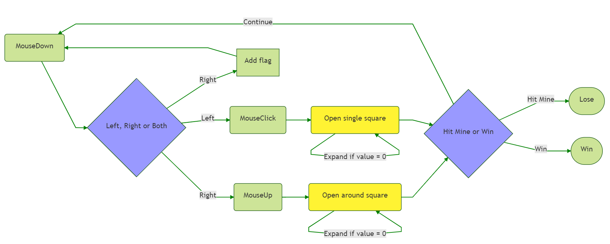

Write My First Game: MineSweeper
This is my first game developed by C# WinForm platform. The initial object is to practice my C# level. So the first game jump into my mind is “MineSweeper”. It is enough simple and interesting. In this post I will list my conception and some difficult point during my development.
To see my MineSweeper project in github.
See also the rule for mineSweeper
Class Conception

In this application three main objects are used in models:
Class
Gamepresents one game, every time when we create or restart a new game, this class is created. Trough this class we have the proprieties likegameResults,flagCountsandgameLevel.Class
Squarepresents every single squares on the board, it is applied to a two-dimension array in classGame. In this class, we have the proprieties like the value of square (-1 for mined, and [0-9] for others), the position in the boards. Also I use an enumeration `` to define the status of square(open, close, flagged…)Class
Framepresents the board on the interface. this class takes charges of the drawing function. Every drawing function return a temporary bitmap picture in the backend, and the front interface cover this bitmap to itself.
Program process

As described as above, every time when we click the mouse, the program enter into different functions defined in object Game according to the different mouse event (left click, right click or both click). And at the end of every function, we call the function drawing in Frame to refresh our frontend interface.
Some focal points in my development
Different mouse events
In the program, I use many different mouse events. I’d like to list as below by raising order. You can find the completely mouse events definitions here.
Note that in my program, I don’t know it’s which click are mouse down or up, I use two properties leftDown and rightDown to keep and record the status of my clicks.
MouseMove event: This function is raised when your mouse’s position are changed.
I use this event to realize that when I keep holding my left click and moving on the board, all passing squares are pressed down.
1
2
3
4
5
6
7
8
9
10
11private void pnlMine_MouseMove(object sender, MouseEventArgs e)
{
if(game.InGameSize(e.Location) && !game.Result.HasValue)
{
if(leftDown)
{
game.SetSquaresDown(e.Location, rightDown);
RefreshFrame();
}
}
}MouseDown event: This function is called when your mouse is clicked down
I use this function to add flag if it’s the right click, also if left click, I will set the property
leftDownto be true and use it in mouseUp function later.1
2
3
4
5
6
7
8
9
10
11
12
13
14
15
16
17
18
19
20
21
22
23
24private void pnlMine_MouseDown(object sender, MouseEventArgs e)
{
if(!game.Result.HasValue)
{
switch(e.Button)
{
case MouseButtons.Left:
leftDown = true;
game.SetSquaresDown(e.Location, rightDown);
game.ChangeFace(GameFace.MouthOpen);
break;
case MouseButtons.Right:
rightDown = true;
if(!leftDown)
game.AddRemoveFlag(e.Location);
break;
}
if(leftDown && rightDown && game.InGameSize(e.Location))
game.SetSquaresDown(e.Location, true);
RefreshFrame();
}
}MouseClick event: This function is called after function MouseDown
This function is the most common mouse event, I use it to open a single square if it’s left click.
1
2
3
4
5
6
7
8
9
10
11
12
13
14private void pnlMine_MouseClick(object sender, MouseEventArgs e)
{
if(e.Button == MouseButtons.Left && (!leftDown || !rightDown) && game.InGameSize(e.Location) && !game.Result.HasValue)
{
if(!game.IsStart)
{
game.StartGame(e.Location);
threadTimer.Change(0, 1000);
}
game.OpenSingleSquare(e.Location);
RefreshFrame();
}
}MouseUp event: This function is called the moment when your mouse is click up (the position of click up).
I use this function to open around squares if it’s both click (leftDown && rightDown)
1
2
3
4
5
6
7
8
9
10
11
12
13
14
15
16
17
18
19
20
21
22private void pnlMine_MouseUp(object sender, MouseEventArgs e)
{
if(!game.Result.HasValue)
{
if(leftDown && rightDown && game.InGameSize(e.Location))
game.OpenAroundSquares(e.Location);
switch(e.Button)
{
case MouseButtons.Left:
leftDown = false;
break;
case MouseButtons.Right:
rightDown = false;
break;
}
game.SetAllSquaresUp();
game.ChangeFace(GameFace.SmileUp);
RefreshFrame();
}
}
The drawing jobs
As this is my first winForm application, I know few about the windows GDI+ technology, fortunately the drawing functions I use in my application is simple enough.
Create the frame:

When the game is started, the first thing we do is to create the entire frame, To realize that, I created three empty bitmap as temporary buffer image (one for info panel, one for mine panel, and one for main panel) in the frame object. They all have the same size as the frontend frame
Create a new bitmap and initialize it by color Gray 1
2
3
4
5
6
7
8
9bufferMainFrame = new Bitmap(rctGameField.Width, rctGameField.Height);
bufferInfoFrame = new Bitmap(rctPnlInfo.Width, rctPnlInfo.Height);
bufferTimerFrame = new Bitmap(rctPnlTimer.Width, rctPnlTimer.Height);
bufferMineFrame = new Bitmap(rctPnlMine.Width, rctPnlMine.Height);
Graphics.FromImage(bufferMainFrame).Clear(GRAY);
Graphics.FromImage(bufferInfoFrame).Clear(GRAY);
Graphics.FromImage(bufferTimerFrame).Clear(GRAY);
Graphics.FromImage(bufferMineFrame).Clear(GRAY);The function
Graphics.FromImage(bufferMineFrame)can get the brush of this image.
The functionGraphics.Clear(GRAY)can clear a picture by a specified color (Gray in here).
Draw the squares:
In the game, you need to open squares with different value. According to the different value of square, you need to draw different image on the specified position of the temporary image.
Function Draw Square 1
2
3
4
5
6
7
8
9
10
11
12public Bitmap DrawSquare(Square square)
{
Graphics g = Graphics.FromImage(bufferMineFrame);
int srcY = (int)square.Status + (square.Status == MineStatus.OpenedNumber ? (Square.MaxSquareNum - square.Value) * ImgMineUnitWidth : 0);
Rectangle mineRect = new Rectangle(square.Location, new Size(squareSize, squareSize));
Rectangle srcRect = new Rectangle(new Point(0, srcY), new Size(ImgMineUnitWidth, ImgMineUnitWidth));
GraphicsUnit units = GraphicsUnit.Pixel;
g.DrawImage(imgMine, mineRect, srcRect, units);
return bufferMineFrame;
}Function Graphic.DrawImage can draw a specified image on the target frame.
imgMineis your image that you choose to put on the target frame,srcRectis the part of your image (imgMine).
Refresh the square on the board:
As some of you may ask why you have to draw on the temporary bitmap and cover it to the frontend interface ? why we cannot draw the image directly on the frontend board ?There are two reasons:
The first is that in my opinion the logic to draw and refresh the image are something in the backend, The frontend interface only call the function in the backend to refresh its frame.The second and more important reason is that if we draw the image directly in frontend frame, when many squares are updated in one time, every seconds the frame is being drawn, that will cause a blink effect. So we choose to draw all the squares in a temporary buffer picture and apply it to the frontend frame only one time.
Function to apply the temporary image to the frontend frame 1
2
3
4
5private void RefreshFrame()
{
pnlMine.CreateGraphics().DrawImage(game.GameFrame.MineFrame, ClientRectangle.Location);
pnlInfo.CreateGraphics().DrawImage(game.GameFrame.InfoFrame, ClientRectangle.Location);
}
The function to open the square
- There are two ways to open the squares, one is to left click a closed square, the around 8 squares need to open if the value equals to 0
- The other is to both click an opened square, if it has the same count of flag around it as the value of this square, they need to be expanded also.
- Both two ways need a recursive function
1 | public bool ExpandSquares(Square sq) |
1 | public List<Square> GetAroundSquare(Square[,] squares, bool excludeMine = false, bool excludeOpen = false) |
Yates shuffle Algorithm
1 | for(int i = n-1; i >= 0; i--) |
- At start of game, you need to set randomly the mines on the board. And set the value of each square according to the mine count around it.
- In my application, I use the algorithm Yates shuffle to set my mines. I suppose that in my square array, the first k squares are mines (k is your mine count), and I switch my arr[i] square with a random(arr[0] ~ arr[i-1]) square. And do this for n times. (n is your total squares)
- After you have set your mines, you need to parse all your mine, and set the value of around square = value + 1.
- The difficulty is that the first click of a game cannot be a mine. So that change my algorithm. I can only set my mines and value of other squares after the first click on the board. Moreover, the click square should only be 0 so that it can expand a block of squares around it (the around square should not be mine). To solve this problem, I change my function as below
1 | private void KnuthShuffleMine(Point point) |
1 | private Point GetRandomPoint(Random random, int x, int y, int indexX, int indexY) |
You can find more introduce for this algorithm here
ThreadTimer function
Also, in my game I need a timer to record my scores, and the time should be changed every seconds in the frontend interface. In winForm application there are three methods to create a timer, here I use the System.Threading.Timer, as it create a different thread from the main tread, so it’s the most accurate timer comparing to the other two methods.
1 | if(threadTimer != null) |
Function
new System.Threading.Timer(new TimerCallback(ChangeTime), null, Timeout.Infinite, 1000)create a new instance of Timer object.
The parameternew TimerCallback(ChangeTime)is the function (in this caseChangeTime) raised every interval time.
The parameternullis your parameter of your raised function. In my function I have no parameter to parse, so it’s null.
The parameterTimeout.Infiniteis the start time of your timer function. If you want to start the timer right now, you can set it to 0.
The last parameter is the interval of timer. In my case it’s 1000 mille seconds.
1 | public delegate void MyInvoke(); |
To note that, as the timer uses a different thread from the main thread, If you want to call/raise the controls in your main thread in this timer function, you need to create another Invoke and use your main thread’s controls in this Invoke, otherwise the program will raise an error.
Fix and center my form size
1 | this.StartPosition = System.Windows.Forms.FormStartPosition.CenterScreen; |
Save my score when breaking records
To save my scores, I use the property of userSetting. The differences between userSetting and appSetting is that appSetting cannot be modified in the program, but with userSetting you can change it or load it in your program.
You need to define your all setting properties in your setting.cs file.
1 | private void SetNewRecords() |
To load your setting property :
game.TimeRecord = Properties.Settings.Default["InterRecord"]
To save your setting property :Properties.Settings.Default["InterRecord"] = game.TimeRecord;Properties.Settings.Default.Save();
Conclusion
This is my first game developed by C# winForm. At first I think that it’s easy to develop, but in fact I still met some difficulties and it took me about two weeks to finish it. Maybe in the future I would add some another features like music and animation effect to my application.